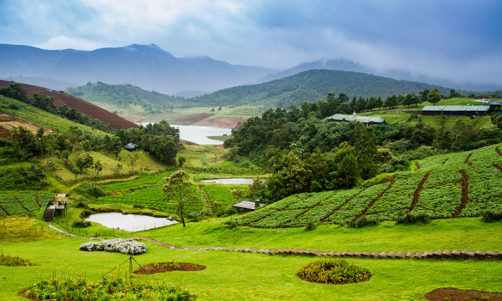

Wayanad Mountains: A Paradise in the Western Ghats
Wayanad, located in the northern part of Kerala, is often referred to as the "Green Paradise" of South India. This district is blessed with a diverse range of natural attractions, from verdant forests to mist-covered valleys, but it’s the majestic mountains that truly define the region’s breathtaking landscape.Nestled in the serene Western Ghats, Wayanad is a breathtakingly beautiful district in Kerala that boasts an unparalleled blend of natural beauty, wildlife, and history. Known for its mist-covered mountains, verdant forests, and sprawling spice plantations, Wayanad is a paradise for nature lovers and adventure enthusiasts alike.

OOTY: THE PRICETON OF SOUTH INDIA
Ooty, officially known as Udhagamandalam, is a picturesque hill station located in the Western Ghats of Tamil Nadu, India. Perched at an altitude of 2,240 meters, Ooty is renowned for its cool climate and stunning natural beauty, making it a popular retreat from the sweltering heat of the plains. The town is a treasure trove of scenic vistas, from sprawling tea plantations to dense forests and shimmering lakes. One of the most iconic experiences in Ooty is the Nilgiri Mountain Railway, a UNESCO World Heritage site, where visitors can embark on a delightful journey through tunnels, over bridges, and along the mountainside, all while soaking in the breathtaking scenery.
COORG: The Mini Scotland Of India
Coorg, also known as Kodagu, is a lush, green paradise nestled in the Western Ghats of Karnataka, India. Often referred to as the "Scotland of India," Coorg is famous for its rolling hills, expansive coffee plantations, and mist-covered valleys. The region's cool climate and serene environment make it a perfect getaway for those seeking tranquility amidst nature. Coorg is also rich in culture and tradition, with the Kodava people known for their distinct customs, martial history, and hospitality. Visitors can explore the aromatic coffee estates, trek through dense forests to discover hidden waterfalls, or visit the famous Raja's Seat, offering panoramic views of the surrounding landscape.
Munnar: A Scenic Gem in the Western Ghats
Munnar, nestled in the Western Ghats of Kerala, is a breathtaking hill station renowned for its lush tea gardens and verdant landscapes. This picturesque town offers a tranquil retreat from the hustle and bustle of city life, with its rolling hills blanketed in vibrant green tea plantations and dense forests. The cool climate and misty mornings create a serene atmosphere, perfect for nature lovers and adventure enthusiasts alike. Munnar is also home to a variety of wildlife, including the endangered Nilgiri Tahr, and boasts several captivating attractions such as the Anamudi Peak, the highest peak in South India, and the serene Mattupetty Dam.